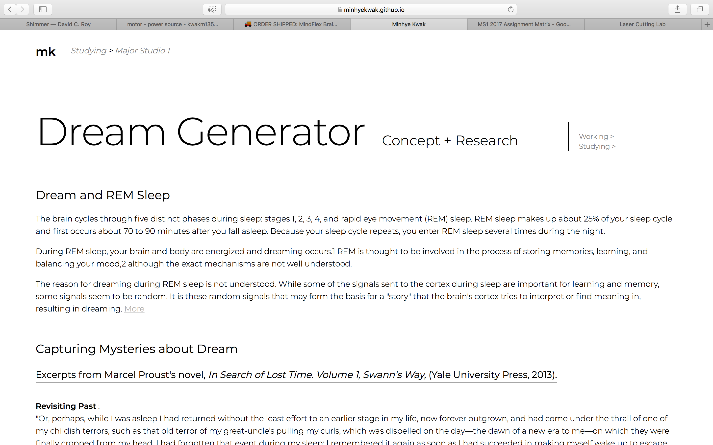
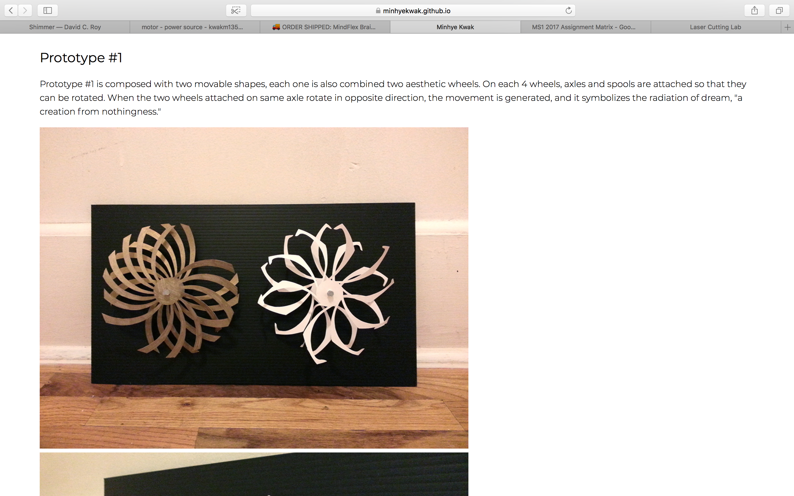
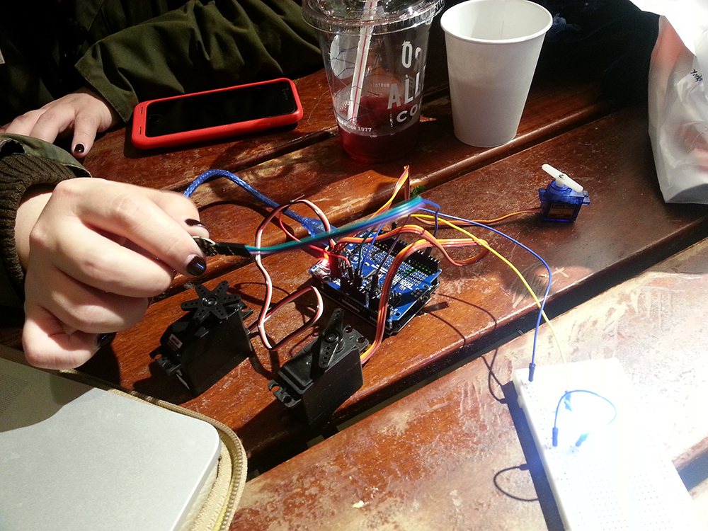

User Testing Setup
Brief concept explanation + Prototype #1 + #2



User Testing #1
Feedbacks: Context and User Approach
- Pulse sensor's value is not stable, so it is not giving user a feedback right now. The feedback is not accurate so it is not easy to understand the whole picture.
- Try another sensor which gives user a control. I know that you are trying to make something poetic, but this might not what you want. You may not make people sleep, and even user sleeps, that part is conflicting with the context. If user sleep, the visual and noise will be generated so those make me not want to sleep, rather want to watch them. And if user watch them, then the heartbeat will be getting higher, and they will stop. Then the user will never watch them. So what is the purpose of this? Who is the audience?
- Clarify the context and audience. Like you said the two parties of audience have to be separated. You might need to consider other sensors or other metaphors of sleeping. For instance, eye-closing sensor will be more effective. Rather just relaxing or actual sleeping, when user close eyes, the other audience can enjoy the visual, and otherwise, the participant can listen to the sound of motors and give other kinds of effects. Choose more obvious way to understand like eye closing.
- You have to create all the context. How can people relax in public space while other people are watching? Open BCI sensors are detecting when user close their eyes or not with alpha data of the brain.
User Testing #2
Feedbacks: Visual Massiveness
- It's hard to understand at the first moment. Also the visual is not so dream-like. User might not feel it represent dream because of the visual, the function, and the noise - there is no comfortable context. Search more dreamlike elements.
- Make more authentic, idea-focused visual elements rather than just using existing geometric pattern. Express your own experience on dream more, you-oriented stuffs. Those patterns do not go with your own idea of correlation between dream, universe, and singularity.
- This patterns look too light and shallow. It needs more heaviness and massiveness to express your ideas. Universe and earth are infinite, vast, and massive. Concentrate on your own idea more. Even if you use light material, but seek material which gives a sense of heaviness.
- Universe is not always geometric. Geometric elements can be expressed, but not too complicated way. This is not so effective. "Magic eye" could be the other way. Think about more about your core message.
- It seems like your focus is separated. Focus on your original idea more. That gives a feeling of massiveness, and the delivery and effects will be doubled. So far, this is closer to ostensible decoration. It looks not alive, rather dead. Dream is not a shallow thing. I cannot see the core message of yours. Everything is separated. Chase more simplicity focused on your core purpose. Focus on two or three things. This is not speaking what you are saying, rather it is limited and boring.
User Testing #3
Feedbacks: User Experience and Scenario
- What about doing this experiment on actually sleeping person? It would be interesting. I can be your sleeping, and dreaming user.
- It's mysterious and interesting. Also rotating something like that is interesting.
- More relaxing, more creative visual can be generated: this idea is good. Creativity comes from nothing like what you said. Creation comes from no intention to do something, "rest": this message can be confirmed through your work. This project is like a confirmation of that fact.
- I don't know exact connection between pulse sensor and dream. As long as you cannot experiment actually sleeping person, it could be hard to convey the message without any explanation. It is hard to prove this work is connected to dreams. How about refer to psychological, and scientifical research on brain during the REM.
- How about giving user experience of simulating dream? If you cannot make users sleep, but you can try to make them simulate dreams. After make them close their eyes, and make them imagine or remember something. Something the most similar experience to dreams.
- What about closing eyes and then try not to think anything. After that what thought came up on your mind? Make users share their experience after that. Maybe that would be the most similar experience to dreams. Search for the research results on that. What is the closest state to dreaming when we are awake? We are actually daydreaming.
- It is general to think that if the movement of installation is active, user will think that they are actually having a lot of thoughts. But your work is moving the opposite way that if people have less thoughts, the movement is more active. That gives surprising effects, I think that would be beyond user's expectation, so it has interesting part.
- Make simple standard to apply the most of users. Guideline: close your eyes - try not think of anything - then what kind of thing comes up? And get the feedback and answers - like questionnaire. Easy and simple guideline and questions. Make them write or draw to express their experience. "What idea came up on your mind? How do you think this is related to your dreams? What color come up your mind? Why the noise and why quiet?" Make simple format to answer or draw something to apply anyone or multiple choices. (e.g cards) After compiling the results, you can prove the actual results on percentage.
- How about title will be posted next to the installation? That would be helpful to have the idea of subject before the actual experience.